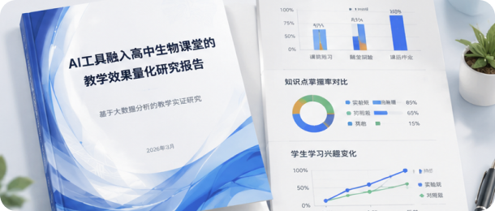

AI赋能教师教学
让AI成为教师的教学好帮手，覆盖备课、课堂互动、作业批改与学情分析。
一线教师AI教学数字素养
了解人工智能基本原理与核心概念，建立AI与教育融合的基本思维框架
掌握主流AI教育工具，能够在备课、教案生成、资源制作中熟练使用
运用AI辅助完成个性化、差异化教学方案设计，提升设计质量与效率
将AI工具深度嵌入课堂教学全流程，提升互动、反馈与学情诊断能力
基于AI数据驱动教研改革，推动协同备课、集体教研的智能化转型
产出可传播、可推广的AI教育实践成果，形成个人教学品牌与专业影响力
王雅琴 · 上海市徐汇区第三中学
李建明 · 北京市朝阳区实验学校
陈晓燕 · 义乌市实验幼儿园

教学反思张伟华 · 广州市越秀区育才学校
王雅琴 · 上海市徐汇区第三中学
李建明 · 北京市朝阳区实验学校
陈晓燕 · 义乌市实验幼儿园
张伟华 · 广州市越秀区育才学校
教育技术学教授｜AI教育应用与教师数字素养
AI教学设计教师发展特级教师｜跨学科课堂创新与五育融合实践
课堂融合课例打磨教研员｜区域教研组织与成果评价体系建设
区域教研成果评价AI产品专家｜生成式AI工具应用与教学场景设计
AI工具场景设计专业的教育解决方案、全面先进的产品帮您实现教育规划